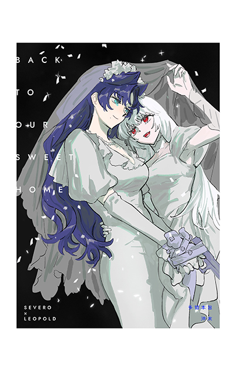

情報サイト
AU一覧
金環蝕
金環蝕 1
野望の心は清らかではない。それこそ、私は愛の権能を与えるのだ。
Illustration : 足軽足 様

金環蝕
kinkan shoku
多错本旨
試し読み
表題作
金環蝕 1 『冒涜』
攻
Leopold
（実年齢不明）刑事
特殊事件捜査担当官
鬼畜
腹黒
少女
スパダリ
美しい
警視庁高官
受
Severo
26歳,刺繍家／人狼
連続殺人の容疑者？
エフェボフィル
野心家
洗練
気が違う
苦痛快楽者
敬語
陰キャ
設定
再会
身分差
人外
ファンタジー
トラウマ・精神的負傷
トーン
シリアス
ダーク
ホラー・オカルト
あらすじ
警察官Lは、ある日仕事中に証人Sと出会う。Sの目つきで、かつて飼っていた猫を思い出させた。
短い調査の後、LはSが犯人だと気づいた。しかし、それを公表せず、密かに神秘的な身分を使ってSを脅し、再会を提案する。
Sは口封じのつもりで会いに行ったが、Lに猫の振る舞いを求められた。
Sは性的なサービスだと思ったが、Lは本物の猫のように振る舞うことを要求するだけだ。
最初は恥ずかしく命令に従うのは難しかったが、愛と訓練の下で、Lの猫として過ごすうちに、Sは奇妙な満足感を感じるようになる——
こんな少し歪んだ純愛です……
表題作
金環蝕 2
攻希望
Severo
27歳,洋裁店店主／人狼
Lの『猫』→Lの恋人,L屋敷の下宿人
Sub
元殺し屋
年下
優雅
執着
愛が重い
苦痛快楽者
受？
Leopold
家族やペットをちゃんと可愛がるいい『主人』
Dom
腹黒
スパダリ
溺愛系
誘い・襲い
美しい
富豪
設定
身分差
年の差
人外
ファンタジー
主従
トーン
あまあま
あらすじ
この時期のSは日常生活でLの猫役を担当した。
複雑な経緯はなく、ただLの飼い猫が寿命を全うした後、Lが「もう少し寿命の長いペットが欲しい」と思っただけの話だった。
表題作
金環蝕 3
攻
Severo
36歳,高級料亭オーナー
官僚の妻
元殺し屋
優雅
執着
愛が重い
気が違う
年下
受
Leopold
年齢不明,官僚
警視庁の高官
元攻め
スパダリ
溺愛系
誘い・襲い
美しい
強気
超然
設定
人外
ファンタジー
主従
ソフトSM
トーン
あまあま
シリアス
せつない
あらすじ
数日内に追加の内容をアップします。